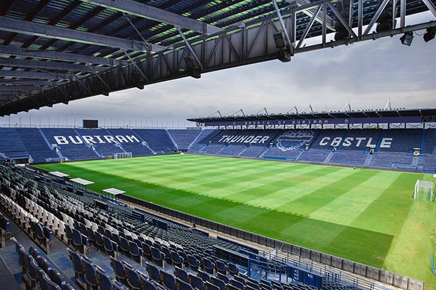

สถานที่ท่องเที่ยวในจังหวัดบุรีรัมย์
สถานที่ท่องเที่ยวในจังหวัดบุรีรัมย์
1. ปราสาทพนมรุ้ง

2. ปราสาทเมืองต่ำง

3. ช้าง อารีนา
4. วงเวียนอนุสาวรีย์รัชกาลที่ 1

วงเวียนอนุสาวรีย์พระพุทธยอดฟ้าจุฬาโลกมหาราช (รัชกาลที่1)
เป็นอนุสาวรีย์ศักดิ์สิทธิ์คู่บ้านคู่เมืองบุรีรัมย์ ใครมา จ.บุรีรัมย์
ต้องไม่พลาดที่จะมาสักการะเพื่อเป็นสิริมงคล
เชื่อกันว่าสถานที่เเห่งนี้ศักดิ์สิทธิ์เป็นอย่างมาก
ใครมากราบไหว้ขอพรสิ่งใดก็มักจะสมปราถนาในเรื่องที่ขอ
โดยอนุเสาวรีย์ตั้งอยู่ข้าง ม.ราชภัฏบุรีรัมย์
สำหรับอนุสาวรีย์พระพุทธยอดฟ้าจุฬาโลกมหาราช(รัชกาลที่1)
เป็นอนุสาวรีย์ศักดิ์สิทธิ์คู่บ้านคู่เมืองบุรีรัมย์มาอย่างยาวนาน
บอกเล่าถึงเรื่องราวครั้งตอนที่ท่านได้เสร็จมายังเมืองบุรีรัมย์และตั้งเมืองบุรีรัมย์ในพื้นที่ตรงนี้
5. วนอุทยานภูเขาไฟกระโดง